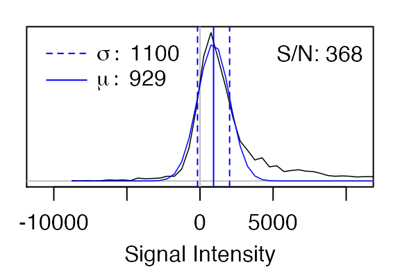
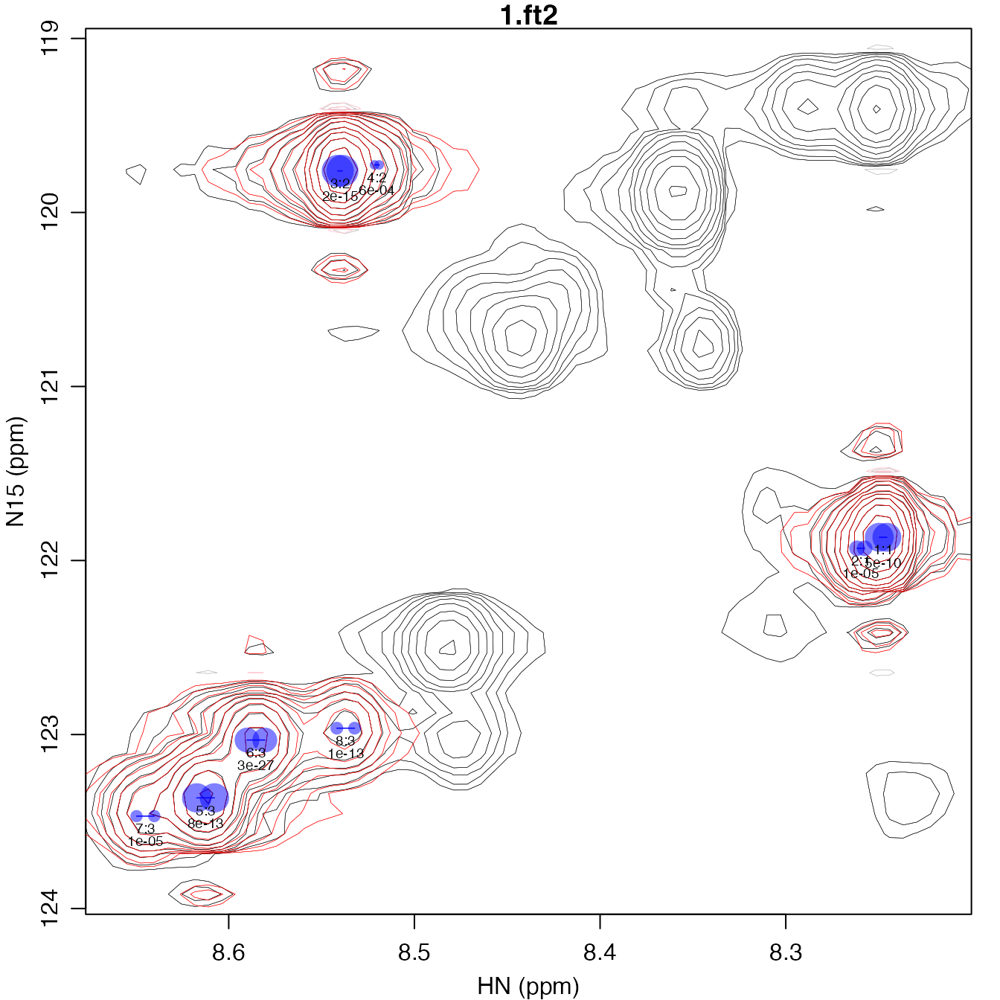
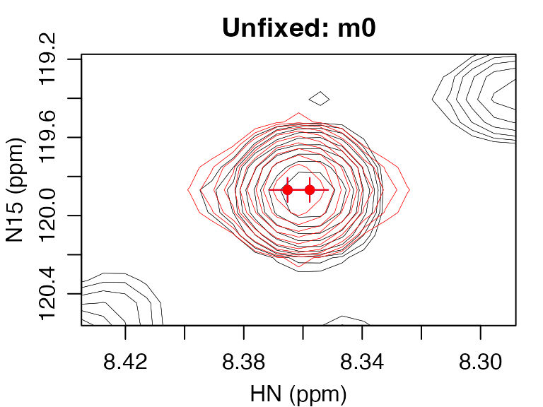
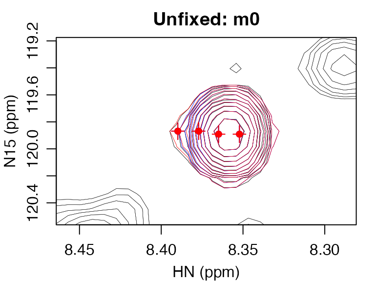
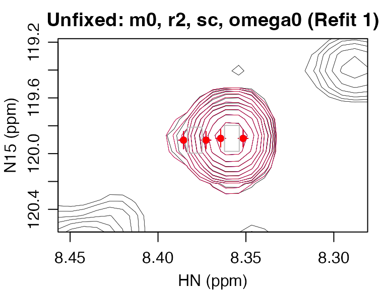
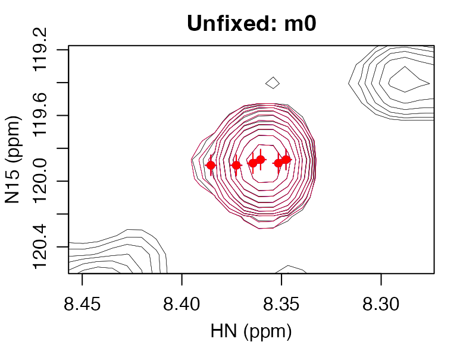
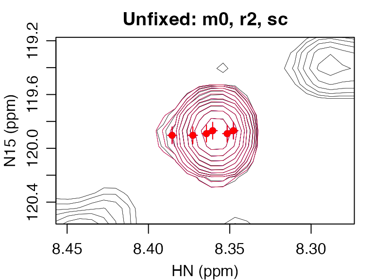
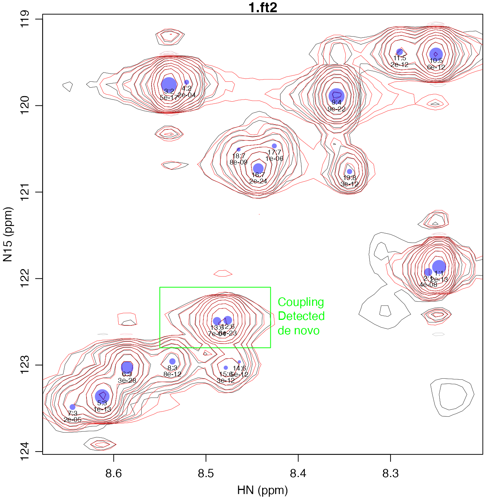
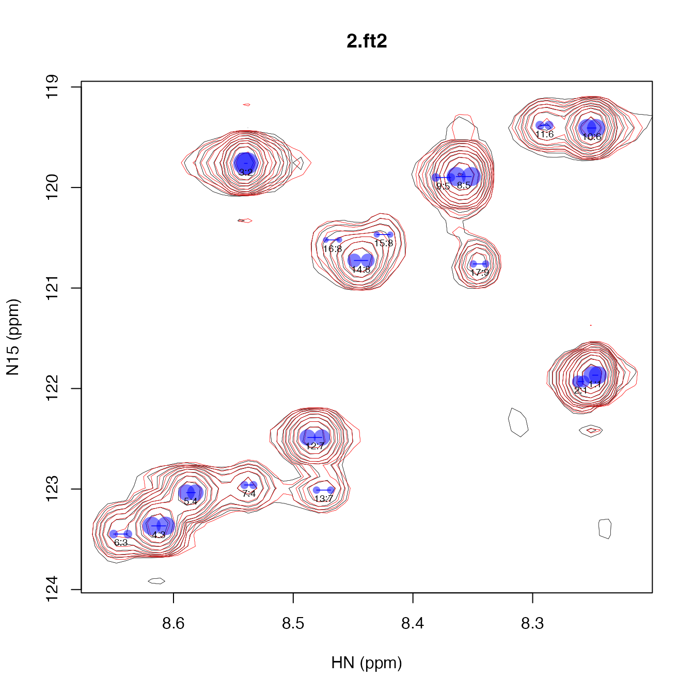

FitNMR enables fully automated peak fitting of 2D NMR spectra. This document is split into two sections. The first section demonstrates how fitting can be done using R code, various stages of the algorithm, and some of the ways that the results can be visualized. The second section, “Fitting Peaks without Coding”, shows how the same fitting can be done with very little manual code entry using two convenience scripts, fit_peaks_2d.R and refit_peaks_2d.R.
The following tutorial will assume you have loaded the FitNMR package.
library(fitnmr)The first step in peak picking is to load one or more spectra. There are a number of example spectra that come with the FitNMR package. For this tutorial, we will be using spectra from a T1 measurement of a small de novo designed mini-protein. The directory containing that data and the spectrum filenames can be determined with the following commands:
t1_dir <- system.file("extdata", "t1", package="fitnmr")
t1_ft2_filenames <- list.files(t1_dir, pattern=".ft2")
t1_ft2_filenames
#> [1] "1.ft2" "2.ft2"The read_nmrpipe function is used to read NMRPipe-formatted spectra.
To read both files, we will use the lapply function in R. It builds a list data structure by iterating over the items in the first argument and applying the function given in the second argument to each. Any subsequent arguments are passed to the function when it is called. The file.path function joins the directory where the files are located to the file names.
The dim_order="hx" argument tells read_nmrpipe to reorder the dimensions of the spectra so that the 1H dimension is first. This is important as most default NMRPipe processing scripts will leave the 1H as the second dimension. After reading a list of spectra, we will assign names to the list of spectra using the original filenames.
spec_list <- lapply(file.path(t1_dir, t1_ft2_filenames), read_nmrpipe, dim_order="hx")
names(spec_list) <- t1_ft2_filenamesThe underlying data structures used to store the two spectra can be shown with the str function:
str(spec_list)
#> List of 2
#> $ 1.ft2:List of 4
#> ..$ int : num [1:66, 1:45] 1243 1033 2060 2653 2102 ...
#> .. ..- attr(*, "dimnames")=List of 2
#> .. .. ..$ HN : chr [1:66] "8.6770160099608" "8.66967763204871" "8.66233925413663" "8.65500087622454" ...
#> .. .. ..$ N15: chr [1:45] "124.032918497401" "123.917245763118" "123.801573028835" "123.685900294552" ...
#> ..$ ppm :List of 2
#> .. ..$ HN : num [1:66] 8.68 8.67 8.66 8.66 8.65 ...
#> .. ..$ N15: num [1:45] 124 124 124 124 124 ...
#> ..$ fheader: num [1:29, 1:2] 1 4.77 533 2048 799.74 ...
#> .. ..- attr(*, "dimnames")=List of 2
#> .. .. ..$ : chr [1:29] "QUADFLAG" "CAR" "CENTER" "FTSIZE" ...
#> .. .. ..$ : chr [1:2] "HN" "N15"
#> ..$ header : Named num [1:512] 0.00 4.01e+09 2.35 0.00 0.00 ...
#> .. ..- attr(*, "names")= chr [1:512] "FDMAGIC" "FDFLTFORMAT" "FDFLTORDER" "" ...
#> $ 2.ft2:List of 4
#> ..$ int : num [1:66, 1:45] -679 -355 260 642 413 ...
#> .. ..- attr(*, "dimnames")=List of 2
#> .. .. ..$ HN : chr [1:66] "8.6770160099608" "8.66967763204871" "8.66233925413663" "8.65500087622454" ...
#> .. .. ..$ N15: chr [1:45] "124.032918497401" "123.917245763118" "123.801573028835" "123.685900294552" ...
#> ..$ ppm :List of 2
#> .. ..$ HN : num [1:66] 8.68 8.67 8.66 8.66 8.65 ...
#> .. ..$ N15: num [1:45] 124 124 124 124 124 ...
#> ..$ fheader: num [1:29, 1:2] 1 4.77 533 2048 799.74 ...
#> .. ..- attr(*, "dimnames")=List of 2
#> .. .. ..$ : chr [1:29] "QUADFLAG" "CAR" "CENTER" "FTSIZE" ...
#> .. .. ..$ : chr [1:2] "HN" "N15"
#> ..$ header : Named num [1:512] 0.00 4.01e+09 2.35 0.00 0.00 ...
#> .. ..- attr(*, "names")= chr [1:512] "FDMAGIC" "FDFLTFORMAT" "FDFLTORDER" "" ...This shows that there is a list of two spectra. Each spectrum is itself a list with four named components:
int: A multidimensional array with the intensities of the spectrum, which in this case it is just a 2D matrix. The chemical shifts are stored in character format in the dimension names (dimnames) of the array.ppm: A list of chemical shifts for each dimension stored in numeric format.fheader: A matrix of header values associated each dimension.header: The raw data from the 512-value NMRPipe header.We can produce a contour plot first spectrum using the contour_pipe function. It takes a matrix as input, so we must extract the int matrix of the first spectrum with the syntax shown.
contour_pipe(spec_list[[1]]$int)As you can see above, the spectrum has a number of overlapped peaks with possible shoulders.
The automated peak fitting procedure uses the noise level of each spectrum to determine a cutoff below which peaks will no longer be added. FitNMR includes a function, noise_estimate, for determining the noise level by fitting a Gaussian function to a histogram of the signal intensities.
The sapply function below is similar to the lapply function used above, but it attempts to simplify the output of each function into a matrix. In this case, because a vector of three numerical values is returned each time noise_estimate is called, a 3xN matrix of results is created. Also, because the noise_estimate function just takes numerical intensities, the code below defines a short inline function to extract those from each spectrum.
noise_mat <- sapply(spec_list, function(x) noise_estimate(x$int))
noise_mat
#> 1.ft2 2.ft2
#> mu 928.52 385.31
#> sigma 1097.91 739.07
#> max 404348.28 116520.75The resulting matrix above gives the mean value the noise is centered on (mu), the standard deviation of the noise (sigma), and the maximum intensity in the spectrum (max).
The noise_estimate function can create plots showing the histogram of the intensity values (black) and the fit Gaussian function (blue). S/N is defined as max/sigma.

To identify an initial set of peaks, better results will probably be obtained using the spectrum with the highest signal-to-noise ratio, which in this case is the first spectrum.
We will start by running three iterations of the iterative peak fitting method. It takes a list of spectra, which we previously read. In this case, we will only do the fitting on the first spectrum. To get a list of just one spectrum, use single square brackets, [ ], which return another list. (By contrast double square brackets, [[ ]], return individual items from the list that are not enclosed in a list data structure.) The iter_max argument specifies the number of iterations to perform.
FitNMR outputs text describing what the peak fitting algorithm is doing. Adding the first peak involves addition of 6 parameters to the model (2 omega0, 2 r2, 1 m0, and 1 scalar coupling). The probability of the observed improvement to the fit happening at random (according to an F-test) is given by the p-value. For the first peak added, this is very low, indicating that having a peak at that position is much better than assuming otherwise. Adding the second peak involves addition of just 3 parameters (2 omega0 and 1 m0), because several of the parameters are shared with the first peak (2 r2 and 1 scalar coupling). For the first iteration, the search is terminated after the third peak fails to fall below the p-value cutoff, which is specified by f_alpha and defaults to 0.001.
The fit_peak_iter function returns a list of fits, one for each iteration. To convert that into a more user-friendly table, use the param_list_to_peak_df function. The first couple columns of that table give the peak number and fit iteration at which the peak was added. If applicable the F-test p-value will be given next. The next several columns give the peak position (in ppm), the scalar coupling (in Hz), and the R2 (in Hz), with the integer suffix indicating the dimension for each parameter. The remaining columns give the peak volumes from each spectrum.
peak_fits <- fit_peak_iter(spec_list[1], iter_max=3)
#> Fit iteration 1:
#> 0 -> 6 fit parameters: F = 333.8 (p = 4.56642e-10)
#> 6 -> 9 fit parameters: F = 64.6 (p = 1.11899e-05)
#> 9 -> 12 fit parameters: F = 1.2 (p = 0.464419)
#> Terminating search because F-test p-value < 0.001
#> Fit iteration 2:
#> 0 -> 6 fit parameters: F = 734.0 (p = 1.87653e-15)
#> 6 -> 9 fit parameters: F = 14.7 (p = 0.000581712)
#> 9 -> 12 fit parameters: F = 0.1 (p = 0.976358)
#> Terminating search because F-test p-value < 0.001
#> Fit iteration 3:
#> 0 -> 6 fit parameters: F = 27.7 (p = 7.52698e-13)
#> 6 -> 9 fit parameters: F = 226.0 (p = 2.5923e-27)
#> 9 -> 12 fit parameters: F = 13.3 (p = 1.34241e-05)
#> 12 -> 15 fit parameters: F = 68.7 (p = 1.46797e-13)
#> 15 -> 18 fit parameters: F = 7.0 (p = 0.00144316)
#> Terminating search because F-test p-value < 0.001
peak_df <- param_list_to_peak_df(peak_fits)
peak_df
#> peak fit f_pvalue omega0_ppm_1 omega0_ppm_2 sc_hz_1 r2_hz_1 r2_hz_2 1.ft2
#> 1 1 1 4.5664e-10 8.2476 121.87 3.2806 2.9072 2.3345 824420657
#> 2 2 1 1.1190e-05 8.2596 121.93 3.2806 2.9072 2.3345 240560662
#> 3 3 2 1.8765e-15 8.5400 119.76 2.0000 4.7886 2.0996 1020008726
#> 4 4 2 5.8171e-04 8.5202 119.73 2.0000 4.7886 2.0996 89977216
#> 5 5 3 7.5270e-13 8.6124 123.36 7.6481 5.2849 2.1801 848579189
#> 6 6 3 2.5923e-27 8.5853 123.03 7.6481 5.2849 2.1801 607904936
#> 7 7 3 1.3424e-05 8.6449 123.47 7.6481 5.2849 2.1801 147984411
#> 8 8 3 1.4680e-13 8.5370 122.96 7.6481 5.2849 2.1801 161971930
plot_peak_df(peak_df, spec_list[1], cex=0.6)
A plot of the resulting peak fits can be produced with the plot_peak_df function, which requires a peak table and list of spectra. It plots the peaks with contours down to 4 times the standard deviation of the noise present in the spectra. The modeled peaks are shown with red contours and the peak centers are indicated with blue dots, with the area of the blue dot proportional to the volume of the peak. Below each set of dots, the peaks are numbered with the syntax, <peak>:<fit>. All peaks in a given fit will share scalar coupling and R2 parameters. If contained in the input table, the F-test p-value will be given below the peak number. This can be helpful in optimizing the the f_alpha parameter to avoid false negatives while minimizing the number of false positives.
To take a more detailed look inside a single iteration of the algorithm, the fit_peak_iter function can be called again, providing the output of the first time it was run using the fit_list parameter. By setting the plot_fit_stages parameter to TRUE, FitNMR will produce a series of plots illustrating the progress of the algorithm.
A given iteration starts with placing a peak at the highest point in the spectrum, after all previously modeled peaks have been subtracted out. It first optimizes m0, leaving the omega0, r2, and sc parameters at their default values. The resulting peak is shown in the first plot, with red dots at the peak centers and lines ±r2 for each dimension.
After obtaining an initial volume, the peak shape is allowed to change by unfixing the r2 and sc parameters. Subsequent plots are shown with blue contours showing peaks modeled with the input parameters in blue, and the fit parameters in red. Finally, the peak is allowed to move by unfixing the omega0 parameters, with the center of each multiplet constrained to ±1.5*r2, as indicated by the gray square.
peak_fits <- fit_peak_iter(spec_list[1], iter_max=1, fit_list=peak_fits, plot_fit_stages=TRUE)
#> Fit iteration 1:
#> 0 -> 6 fit parameters: F = 2022.7 (p = 1.60653e-20)
#> 6 -> 9 fit parameters: F = 14.0 (p = 0.000228688)
#> Terminating search because fit produced zero volumeIn this case, the last peak added was too close to the first and when all parameters were unfixed, one of the peaks had zero volume, which resulted in termination of this iteration. In this fit, the shoulder peak is present, but is less than 10% of the volume of the major peak. (See fit 4 in the peak lists below.) The newly added peak cluster is outlined in green in the spectrum below.
plot_peak_df(param_list_to_peak_df(peak_fits), spec_list[1], cex=0.6)
rect(8.41, 120.6, 8.31, 119.2, border="green")
text(8.31, 119.9, "New Cluster", pos=4, col="green")To fit the remainder of the peaks, call the fit_peak_iter function again, this time leaving out the iter_max parameter so that the default value (100) is used.
peak_fits <- fit_peak_iter(spec_list[1], fit_list=peak_fits)
#> Fit iteration 1:
#> 0 -> 6 fit parameters: F = 107.8 (p = 9.74212e-11)
#> 6 -> 9 fit parameters: F = 260.6 (p = 2.04021e-13)
#> 9 -> 12 fit parameters: F = 11.0 (p = 0.00161564)
#> Terminating search because F-test p-value < 0.001
#> Fit iteration 2:
#> 0 -> 6 fit parameters: F = 1219.7 (p = 6.27674e-21)
#> 6 -> 9 fit parameters: F = 174.9 (p = 1.74543e-15)
#> 9 -> 12 fit parameters: F = 42.3 (p = 8.00775e-09)
#> 12 -> 15 fit parameters: F = 11.8 (p = 0.000186865)
#> 15 -> 18 fit parameters: F = 1.6 (p = 0.223018)
#> Terminating search because F-test p-value < 0.001
#> Fit iteration 3:
#> 0 -> 6 fit parameters: F = 232.0 (p = 1.0692e-22)
#> 6 -> 9 fit parameters: F = 15.9 (p = 1.99824e-06)
#> 9 -> 12 fit parameters: F = 54.3 (p = 1.15821e-11)
#> Terminating search because fit produced zero volume
#> Fit iteration 4:
#> 0 -> 6 fit parameters: F = 330.9 (p = 1.75035e-07)
#> 6 -> 9 fit parameters: F = 1.8 (p = 0.274918)
#> Terminating search because F-test p-value < 0.001
peak_df <- param_list_to_peak_df(peak_fits)
peak_df
#> peak fit f_pvalue omega0_ppm_1 omega0_ppm_2 sc_hz_1 r2_hz_1 r2_hz_2 1.ft2
#> 1 1 1 4.5664e-10 8.2476 121.87 3.2806 2.9072 2.33450 824420657
#> 2 2 1 1.1190e-05 8.2596 121.93 3.2806 2.9072 2.33450 240560662
#> 3 3 2 1.8765e-15 8.5400 119.76 2.0000 4.7886 2.09965 1020008726
#> 4 4 2 5.8171e-04 8.5202 119.73 2.0000 4.7886 2.09965 89977216
#> 5 5 3 7.5270e-13 8.6124 123.36 7.6481 5.2849 2.18012 848579189
#> 6 6 3 2.5923e-27 8.5853 123.03 7.6481 5.2849 2.18012 607904936
#> 7 7 3 1.3424e-05 8.6449 123.47 7.6481 5.2849 2.18012 147984411
#> 8 8 3 1.4680e-13 8.5370 122.96 7.6481 5.2849 2.18012 161971930
#> 9 9 4 1.6065e-20 8.3580 119.89 10.2029 2.2306 5.03575 875241831
#> 10 10 4 2.2869e-04 8.3791 119.90 10.2029 2.2306 5.03575 62766713
#> 11 11 5 9.7421e-11 8.2506 119.41 6.3683 4.9091 1.85341 732475431
#> 12 12 5 2.0402e-13 8.2900 119.38 6.3683 4.9091 1.85341 181301641
#> 13 13 6 6.2767e-21 8.4826 122.50 9.1982 5.0619 2.03464 475854299
#> 14 14 6 1.7454e-15 8.4629 122.91 9.1982 5.0619 2.03464 28166195
#> 15 15 6 8.0078e-09 8.4768 123.03 9.1982 5.0619 2.03464 92626742
#> 16 16 6 1.8687e-04 8.4786 122.43 9.1982 5.0619 2.03464 105607485
#> 17 17 7 1.0692e-22 8.4433 120.73 7.1444 6.3350 2.97224 460752250
#> 18 18 7 1.9982e-06 8.4251 120.46 7.1444 6.3350 2.97224 97674580
#> 19 19 7 1.1582e-11 8.4663 120.51 7.1444 6.3350 2.97224 62014526
#> 20 20 8 1.7504e-07 8.3444 120.76 8.6176 1.9530 0.86044 105614247
plot_peak_df(peak_df, spec_list[1], cex=0.6)Scalar couplings are only fit for specified dimensions. The only type of splitting pattern currently supported is a doublet. The particular dimensions for which scalar couplings are fit is specified with the sc_start parameter, which should be a two-element numeric vector. The first element of that vector gives the starting value of the scalar coupling in the first dimension, and likewise for the second dimension. If a given dimension is set to NA, then it will not have a doublet generated. If sc_start is left at the default value of c(6, NA), then there will just be a doublet fit in the first dimension, with only a single peak fit in the second dimension. To disable scalar couplings altogether, set sc_start to c(NA, NA).
peak_fits_no_sc <- fit_peak_iter(spec_list[1], sc_start=c(NA, NA))
plot_peak_df(param_list_to_peak_df(peak_fits_no_sc), spec_list[1], cex=0.6)
rect(8.55, 122.8, 8.43, 122.1, border="green")
text(8.43, 122.5, "Coupling\nDetected\nde novo", pos=4, col="green")
Many of the peaks in the above plot can be fit reasonably well without scalar couplings, but the contours do not necessarily match up as well. For one peak boxed in green above, a scalar coupling is detected de novo by the fitting algorithm, with two adjacent peaks having roughly the same volume.
After performing an initial fit, there may be large clusters of peaks that can be separated into different clusters and refit to allow the peak shapes to take on different values. For instance, peaks 5 and 7 shown in “Splitting the Reminder of Peaks” above are sufficiently separated from peaks 6 and 8 in both the vertical and horizontal dimensions, such that it should be possible to fit different peak shape parameters. To separate them out into their own cluster, reassign them a new “fit” cluster that is greater than any other fit group.
Furthermore, you may find that the algorithm has been overzealous and detected peaks that do not appear to be real after visual inspection, for instance peaks 4, 14, and 16. To remove them, simply remove their rows from the peak table. In this case we use the the feature of R that removes elements using a negative subscript:
edited_peak_df <- edited_peak_df[-c(4,14,16),]Even if you don’t separate groups or delete peaks, it may be helpful to perform a simultaneous fit of all peaks together to remove bias that may have accumulated because of overlap between groups of peaks that were originally fit separately. To do so, you need to convert the peak table back to fit input. That is done with the peak_df_to_fit_input function, which requires the peak table, the set of spectra, and the size of the region of interest around each peak where fitting will be done.
Also, you will need to manually update the lower and upper bounds for parameters, which is done automatically with fit_peak_iter. Here we use update_fit_bounds to constrain omega0 within 1.5 times r2 of the starting value, r2 to be in the range 0.5-20 Hz, and the scalar coupling to be in the range 2-12 Hz. Finally, we do the fit using the perform_fit function.
refined_fit_input <- peak_df_to_fit_input(edited_peak_df, spec_list[1], omega0_plus=c(0.075, 0.75))
refined_fit_input <- update_fit_bounds(refined_fit_input, omega0_r2_factor=1.5, r2_bounds=c(0.5, 20), sc_bounds=c(2, 12))
refined_fit_output <- perform_fit(refined_fit_input)
refined_peak_df <- param_list_to_peak_df(refined_fit_output)
refined_peak_df
#> peak fit omega0_ppm_1 omega0_ppm_2 sc_hz_1 r2_hz_1 r2_hz_2 1.ft2
#> 1 1 1 8.2476 121.87 3.3464 2.8966 2.31700 823653909
#> 2 2 1 8.2596 121.93 3.3464 2.8966 2.31700 239523089
#> 3 3 2 8.5395 119.76 2.0000 5.7031 2.07497 1120869405
#> 5 4 3 8.6123 123.37 9.4647 3.2949 2.36755 777520645
#> 6 5 4 8.5853 123.04 6.0584 6.5825 1.79531 632570914
#> 7 6 3 8.6439 123.45 9.4647 3.2949 2.36755 163968213
#> 8 7 4 8.5370 122.96 6.0584 6.5825 1.79531 151176016
#> 9 8 5 8.3575 119.89 10.1574 1.7355 4.73942 803199446
#> 10 9 5 8.3749 119.90 10.1574 1.7355 4.73942 96757331
#> 11 10 6 8.2506 119.41 6.0938 5.0267 1.77681 731298695
#> 12 11 6 8.2901 119.38 6.0938 5.0267 1.77681 180468792
#> 13 12 7 8.4819 122.49 9.4013 5.0804 2.41289 587356398
#> 15 13 7 8.4745 123.01 9.4013 5.0804 2.41289 108282766
#> 17 14 8 8.4433 120.73 9.1220 4.8622 3.19641 436460816
#> 18 15 8 8.4244 120.47 9.1220 4.8622 3.19641 95394763
#> 19 16 8 8.4672 120.52 9.1220 4.8622 3.19641 64410776
#> 20 17 9 8.3442 120.76 8.3984 1.5895 0.91163 97880231
plot_peak_df(refined_peak_df, spec_list[1], cex=0.6)If you have a series of spectra with similar peak shapes, as in this case, you can then extend the fit to more than one spectrum in a manner similar to how we produced the refined peak table above, but instead giving a list of multiple spectra to peak_df_to_fit_input.
extended_fit_input <- peak_df_to_fit_input(refined_peak_df, spec_list, omega0_plus=c(0.075, 0.75))We can take a peek at the parameters that show the starting volumes for the refined and extended fits as shown below. Note that the starting volumes for the second spectrum is a second column in the m0 matrix. Which has inherited the volumes from the first spectrum. After performing the fit, the second spectrum has much lower volumes.
head(refined_fit_output$fit_list$m0)
#> [,1]
#> [1,] 411826954
#> [2,] 411826954
#> [3,] 119761545
#> [4,] 119761545
#> [5,] 560434702
#> [6,] 560434702
head(extended_fit_input$start_list$m0)
#> [,1] [,2]
#> [1,] 411826954 411826954
#> [2,] 411826954 411826954
#> [3,] 119761545 119761545
#> [4,] 119761545 119761545
#> [5,] 560434702 560434702
#> [6,] 560434702 560434702
extended_fit_input <- update_fit_bounds(extended_fit_input, omega0_r2_factor=1.5, r2_bounds=c(0.5, 20), sc_bounds=c(2, 12))
extended_fit_output <- perform_fit(extended_fit_input)
extended_peak_df <- param_list_to_peak_df(extended_fit_output)
extended_peak_df
#> peak fit omega0_ppm_1 omega0_ppm_2 sc_hz_1 r2_hz_1 r2_hz_2 1.ft2 2.ft2
#> 1 1 1 8.2477 121.87 3.5990 2.8622 2.31689 830842209 210047866
#> 2 2 1 8.2597 121.93 3.5990 2.8622 2.31689 229341270 95117365
#> 3 3 2 8.5396 119.76 2.0000 5.7375 2.07965 1123239155 321223317
#> 5 4 3 8.6124 123.37 9.4971 3.2734 2.36572 776957582 219067212
#> 6 5 4 8.5854 123.04 5.9568 6.6395 1.78841 634197446 174862251
#> 7 6 3 8.6441 123.45 9.4971 3.2734 2.36572 162742659 48844731
#> 8 7 4 8.5370 122.96 5.9568 6.6395 1.78841 151478910 42110074
#> 9 8 5 8.3576 119.89 10.1415 1.8255 4.77580 811481657 234014667
#> 10 9 5 8.3747 119.90 10.1415 1.8255 4.77580 90684748 46955496
#> 11 10 6 8.2507 119.41 6.0253 5.0653 1.80271 733711506 210530936
#> 12 11 6 8.2902 119.38 6.0253 5.0653 1.80271 180068078 51782211
#> 13 12 7 8.4820 122.49 9.4837 5.0140 2.39974 585468868 171083375
#> 15 13 7 8.4746 123.01 9.4837 5.0140 2.39974 107909300 35712860
#> 17 14 8 8.4434 120.73 9.0403 4.9595 3.20275 438456400 123241978
#> 18 15 8 8.4246 120.47 9.0403 4.9595 3.20275 96468436 24991594
#> 19 16 8 8.4672 120.52 9.0403 4.9595 3.20275 63361999 21694761
#> 20 17 9 8.3444 120.76 8.3617 1.6683 0.87464 98061407 35062473
plot_peak_df(extended_peak_df, spec_list, cex=0.6)This is the fit for 1.ft2.
The fit for 2.ft2 looks nearly identical but the peaks are about fourfold less intense than 1.ft2. You can tell this because the lowest contour level in the plot below is slightly narrower than in the plot above. (Remember that the lowest contour level is drawn at 4x the noise level for all plots drawn by plot_peak_df.)

The peak volumes between the two spectra are highly correlated and have similar relative ratios, indicating that the T1 values are for the peaks are relatively similar.
xlim <- range(0, extended_peak_df[,"1.ft2"])
ylim <- range(0, extended_peak_df[,"2.ft2"])
plot(extended_peak_df[,c("1.ft2", "2.ft2")], xlim=xlim, ylim=ylim)
abline(lsfit(extended_peak_df[,"1.ft2"], extended_peak_df[,"2.ft2"]), col="red")plot(extended_peak_df[,"2.ft2"]/extended_peak_df[,"1.ft2"], xlab="Peak Number", ylab="Spectrum 2 Volume/Spectrum 1 Volume")To facilitate the fitting of peaks with minimal amounts of R code, two demo scripts are available that will automatically fit and refit NMRPipe spectra found in the directory you run the scripts from.
The first, fit_peaks_2d.R, handles the initial fitting of peaks. You would typically use this script to find an initial set of peaks on the highest signal-to-noise spectrum in your dataset. You customize the script by creating a copy of it then editing the parameters at the top of the file prior to running it in R.
In a typical workflow, you would create a directory to perform the initial fitting in, then copy the reference spectrum into that directory. That spectrum must have .ft2 as the extension, otherwise the script won’t be able to find it. Ordinarily you would do this manually, but here we will do so in code. The following creates a fit directory and copies the first T1 spectrum into it.
dir.create("fit", showWarnings=FALSE)
file.copy(file.path(t1_dir, t1_ft2_filenames[1]), "fit")Next we need to make a copy of the fit_peaks_2d.R script, which may be easiest to do from within R. (Note: if you want to copy the script into the current working directory, change "fit" to "." in the line below.)
file.copy(system.file("demo", "fit_peaks_2d.R", package="fitnmr"), "fit")You can then customize any of the options at the top of fit_peaks_2d:
# Fitting Parameters:
# peak height must be at least this times the noise level for a new fitting iteration
noise_cutoff <- 15
# F-test p-value must be less than this value to accept the addition of a new peak
f_alpha <- 0.001
# maximum number of peak fitting iterations to run
iter_max <- 100
# data +/- these ppm values will be used for fitting (1H and X nuclei, respectively)
omega0_plus <- c(0.075, 0.75)
# starting R2 value for the fits
r2_start <- 5
# R2 values are constrained to be between these two numbers
r2_bounds <- c(0.5, 20)
# starting doublet scalar coupling (1H and X nuclei, respectively), NA for singlet
sc_start <- c(6, NA)
# scalar coupling values are constrained to be between these two numbers
sc_bounds <- c(2, 12)
# Plotting Parameters:
# lowest contour in fit_spectra.pdf will be this number times the noise level
plot_noise_cutoff <- 4
# scaling factor for fit_spectra.pdf labels
cex <- 0.4In this case, we will use the script unmodified. The fit_peaks_2d.R script must be run from within the fit directory, which is done below. (Note: usually you should have already set the working directory to be fit and thus omit the setwd() calls below.)
setwd("fit")
source("fit_peaks_2d.R")
#> Fit iteration 1:
#> 0 -> 6 fit parameters: F = 333.8 (p = 4.56642e-10)
#> 6 -> 9 fit parameters: F = 64.6 (p = 1.11899e-05)
#> 9 -> 12 fit parameters: F = 1.2 (p = 0.464419)
#> Terminating search because F-test p-value < 0.001
#> Fit iteration 2:
#> 0 -> 6 fit parameters: F = 734.0 (p = 1.87653e-15)
#> 6 -> 9 fit parameters: F = 14.7 (p = 0.000581712)
#> 9 -> 12 fit parameters: F = 0.1 (p = 0.976358)
#> Terminating search because F-test p-value < 0.001
#> Fit iteration 3:
#> 0 -> 6 fit parameters: F = 27.7 (p = 7.52698e-13)
#> 6 -> 9 fit parameters: F = 226.0 (p = 2.5923e-27)
#> 9 -> 12 fit parameters: F = 13.3 (p = 1.34241e-05)
#> 12 -> 15 fit parameters: F = 68.7 (p = 1.46797e-13)
#> 15 -> 18 fit parameters: F = 7.0 (p = 0.00144316)
#> Terminating search because F-test p-value < 0.001
#> Fit iteration 4:
#> 0 -> 6 fit parameters: F = 2022.7 (p = 1.60653e-20)
#> 6 -> 9 fit parameters: F = 14.0 (p = 0.000228688)
#> Terminating search because fit produced zero volume
#> Fit iteration 5:
#> 0 -> 6 fit parameters: F = 107.8 (p = 9.74212e-11)
#> 6 -> 9 fit parameters: F = 260.6 (p = 2.04021e-13)
#> 9 -> 12 fit parameters: F = 11.0 (p = 0.00161564)
#> Terminating search because F-test p-value < 0.001
#> Fit iteration 6:
#> 0 -> 6 fit parameters: F = 1219.7 (p = 6.27674e-21)
#> 6 -> 9 fit parameters: F = 174.9 (p = 1.74543e-15)
#> 9 -> 12 fit parameters: F = 42.3 (p = 8.00775e-09)
#> 12 -> 15 fit parameters: F = 11.8 (p = 0.000186865)
#> 15 -> 18 fit parameters: F = 1.6 (p = 0.223018)
#> Terminating search because F-test p-value < 0.001
#> Fit iteration 7:
#> 0 -> 6 fit parameters: F = 232.0 (p = 1.0692e-22)
#> 6 -> 9 fit parameters: F = 15.9 (p = 1.99824e-06)
#> 9 -> 12 fit parameters: F = 54.3 (p = 1.15821e-11)
#> Terminating search because fit produced zero volume
#> Fit iteration 8:
#> 0 -> 6 fit parameters: F = 330.9 (p = 1.75035e-07)
#> 6 -> 9 fit parameters: F = 1.8 (p = 0.274918)
#> Terminating search because F-test p-value < 0.001
setwd("..")This creates a number of files:
list.files("fit")
#> [1] "1.ft2" "fit_iterations.pdf" "fit_peaks_2d.R"
#> [4] "fit_spectra.pdf" "fit_volume.csv" "noise_histograms.pdf"
#> [7] "refit_peaks_2d.R"noise_histograms.pdf gives a histogram of the noise values for each if the input spectra.fit_iterations.pdf shows each iteration of the fitting. The starting peak position (i.e. highest intensity in the spectrum) is indicated with a green circle. The first line of text under each peak gives the peak number and fraction of the total volume in that iteration. The second line gives the F-test p-value for that peak. The title lists the p-value for the peak (not shown) that was rejected because it was greater than f_alpha.fit_spectra.pdf shows the overall spectrum as described above.fit_volume.csv contains all the identified peaks, along with a column for the volume found in each spectrum.The initial fit is done iteratively so it is usually a good idea to refine this by editing the fitting groups, deleting extraneous peaks, and then doing a simultaneous refit of all peaks together with the refit_peaks_2d.R script. We will do this in another directory called refine, to which we will also copy the first spectrum and the refit_peaks_2d.R script:
dir.create("refine", showWarnings=FALSE)
file.copy(file.path(t1_dir, t1_ft2_filenames[1]), "refine")
file.copy(system.file("demo", "refit_peaks_2d.R", package="fitnmr"), "refine", overwrite=TRUE)You can then customize any of the options at the top of refit_peaks_2d.R:
# Fitting Parameters:
# data +/- these ppm values will be used for fitting (1H and X nuclei, respectively)
omega0_plus <- c(0.075, 0.75)
# omega0 values are constrained to be within this factor times R2 of the starting omega0
omega0_r2_factor <- 1.5
# R2 values are constrained to be between these two numbers
r2_bounds <- c(0.5, 20)
# scalar coupling values are constrained to be between these two numbers
sc_bounds <- c(2, 12)
# enable refitting of omega0
fit_omega0 <- TRUE
# enable refitting of R2
fit_r2 <- TRUE
# enable refitting of scalar couplings
fit_sc <- TRUE
# Plotting Parameters:
# lowest contour in *_fit.pdf will be this number times the noise level
plot_noise_cutoff <- 4
# scaling factor for *_fit.pdf labels
cex <- 0.4
# show omega0 constraints imposed by omega0_r2_factor
plot_omega0_bounds <- TRUE
# Computing Parameters:
# number of cores to use for refitting
mc_cores <- parallel::detectCores()However, in this case we will use the script unmodified. The next step is to copy the peak list from the previous to a file called start_volume.csv in the new directory:
file.copy(file.path("fit", "fit_volume.csv"), file.path("refine", "start_volume.csv"), overwrite=TRUE)Once that file has been copied, you can then manually change the peak groups, as described above, and delete rows for any peaks you want to discard. In this case, that will be done with the following R code:
input_table <- read.csv(file.path("refine", "start_volume.csv"), check.names=FALSE)
input_table[c(5,7),"fit"] <- max(input_table[,"fit"])+1
input_table <- input_table[-c(4,14,16),]
write.csv(input_table, file.path("refine", "start_volume.csv"), row.names=FALSE)The final step is to call the refit_peaks_2d.R from within the refine directory:
setwd("refine")
source("refit_peaks_2d.R")
#> Fitting m0 for spectrum 1.ft2...
#> Fitting omega0,sc,r2,m0 for spectrum 1.ft2...
setwd("..")The refit_peaks_2d.R script first optimizes the volumes, keeping all other parameters fixed, then optimizes the volumes along with whatever other variables the user specifies in the script. Also, unlike the refinement done in R code above, refit_peaks_2d.R only fits a single spectrum at a time. This avoids two problems:
The script creates two files for each spectrum, whose names are derived from the spectrum filenames:
list.files("refine")
#> [1] "1_fit.pdf" "1_volume.csv" "1.ft2" "refit_peaks_2d.R"
#> [5] "start_volume.csv"1_fit.pdf shows the overall spectrum as described above. In addition, it also shows the constraints on the omega0 parameters using gray rectangles, the size of which is determined by the omega0_r2_factor parameter. The central peak position, shown as a small blue dot, is constrained to be within that gray rectangle.1_volume.csv contains all the identified peaks, along with a column for the volume found in that spectrum.To extend the refined fit to a series of other spectra, we will create another directory called extend. To this directory both T1 spectra will be copied. In addition, the fit parameters output by the refinement step will be copied to the file start_volume.csv for use as input.
dir.create("extend", FALSE)
file.copy(file.path(t1_dir, t1_ft2_filenames), "extend")
file.copy(file.path("refine", "1_volume.csv"), file.path("extend", "start_volume.csv"), overwrite=TRUE)A copy of the refit_peaks_2d.R script will be used again:
file.copy(system.file("demo", "refit_peaks_2d.R", package="fitnmr"), "extend", overwrite=TRUE)However, when extending the fit to other spectra, the parameters determining the peak shape (sc and r2) will be fixed, allowing only the volume and peak position to be optimized. This is done by changing fit_sc and fit_r2 to FALSE at the top of the script, which can be done using a text editor. For the purposes of this demonstration, the two parameters are changed with the following code:
script_lines <- readLines(file.path("extend", "refit_peaks_2d.R"))
script_lines <- sub("fit_sc <- TRUE", "fit_sc <- FALSE", script_lines)
script_lines <- sub("fit_r2 <- TRUE", "fit_r2 <- FALSE", script_lines)
writeLines(script_lines, file.path("extend", "refit_peaks_2d.R"))The part of the script showing the parameters to be fit now reads:
# enable refitting of omega0
fit_omega0 <- TRUE
# enable refitting of R2
fit_r2 <- FALSE
# enable refitting of scalar couplings
fit_sc <- FALSENext, run refit_peaks_2d.R from within the the extend directory. It will do the refitting for each spectrum on a different CPU core, reducing the total time taken to fit a large number of spectra.
As above, the script creates two files for each spectrum, whose names are derived from the spectrum filenames:
list.files("extend")
#> [1] "1_fit.pdf" "1_volume.csv" "1.ft2" "2_fit.pdf"
#> [5] "2_volume.csv" "2.ft2" "refit_peaks_2d.R" "start_volume.csv"*_fit.pdf shows the overall spectrum. Pay particular attention to where the small blue circle is located in the gray rectangle. You may want to adjust omega0_r2_factor to increase or decrease the stringency of the omega0 constraint, or possibly choose a different spectrum to use for start_volume.csv.*_volume.csv contains all the identified peaks, along with a column for the volume found in that spectrum.